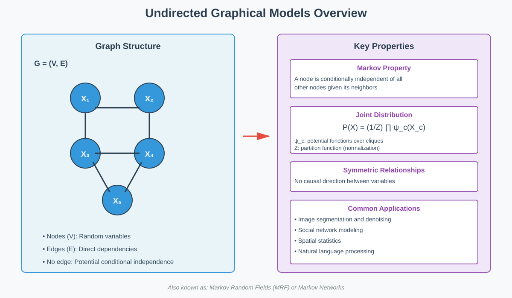
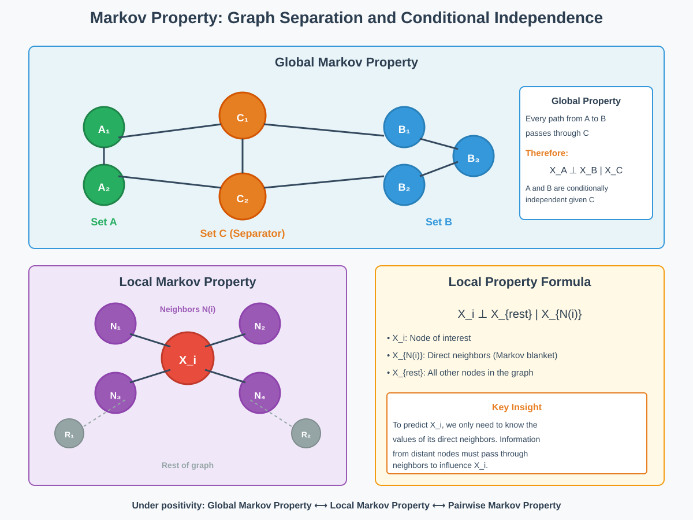
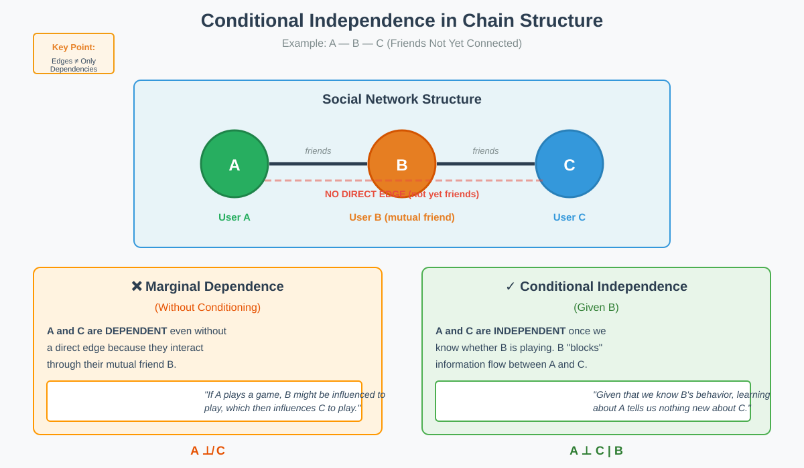
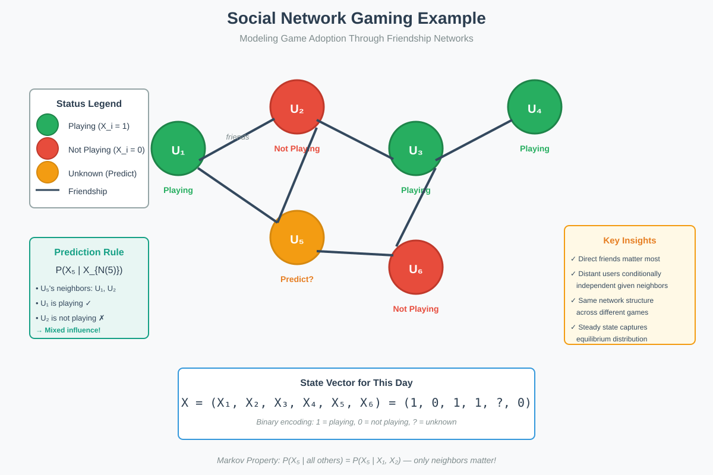

Undirected Graphical Models
📋 Quick Navigation
- Introduction
- Core Concepts
- Markov Property
- Social Network Application
- Key Characteristics
- Summary
- References & Further Reading
Introduction
Undirected Graphical Models (UGMs), also known as Markov Random Fields (MRFs) or Markov Networks, provide a powerful framework for representing complex multivariate probability distributions through graph structures. These models encode conditional independence relationships between random variables using undirected graphs, making them essential tools in machine learning, computer vision, natural language processing, and statistical physics.

Fundamental Definition:
An undirected graphical model consists of a random vector X = (X₁, X₂, ..., Xₚ) with a multivariate distribution Pₓ, together with an undirected graph G = (V, E) where:
- V represents p nodes (vertices), each corresponding to a random variable
- E represents edges encoding conditional independence relationships
- The graph structure captures statistical dependencies in the joint distribution
Why Undirected?
The undirected nature reflects symmetric relationships between variables. Unlike directed graphical models (Bayesian networks), UGMs represent associations without implying causal direction, making them ideal for modeling mutual dependencies and equilibrium states.
Core Concepts
Graph Structure and Random Variables
Components:
- Nodes (Vertices): Each node represents a random variable in the model
- Edges: An edge between two nodes indicates direct statistical dependence
- No Edge: Absence of an edge suggests potential conditional independence
Mathematical Framework:
For a random vector X = (X₁, ..., Xₚ) with joint distribution P(X):
P(X₁, X₂, ..., Xₚ) = (1/Z) ∏ ψ_c(X_c)
Where:
- ψ_c represents potential functions over cliques
- Z is the partition function (normalization constant)
- X_c denotes variables in clique c
Conditional Independence
Key Principle:
Two variables are conditionally independent given a third set of variables if, once we know the values of the conditioning set, learning about one variable provides no additional information about the other.
Formal Definition:
Random variables X_A and X_B are conditionally independent given X_C if:
P(X_A, X_B | X_C) = P(X_A | X_C) · P(X_B | X_C)
Notation:
X_A ⊥ X_B | X_C
Graph Separation
Separation Criterion:
A set of nodes C separates sets A and B if every path from any node in A to any node in B passes through at least one node in C.
Implication:
If C separates A and B in the graph, then X_A ⊥ X_B | X_C in the distribution.
Markov Property
The Markov property is the cornerstone of undirected graphical models, establishing the connection between graph structure and probabilistic independence.

Global Markov Property
Statement:
For any disjoint vertex subsets A, B, and C in graph G such that C separates A and B, the random variables X_A are conditionally independent of X_B given X_C.
Formal Expression:
X_A ⊥ X_B | X_C whenever C separates A and B
Interpretation:
All paths between A and B must pass through C, meaning information flow from A to B is "blocked" by knowing C.
Local Markov Property
Statement:
A variable is conditionally independent of all other variables in the graph given its immediate neighbors (the Markov blanket).
Mathematical Form:
For node i with neighbor set N(i):
X_i ⊥ X_{V\{i∪N(i)}} | X_{N(i)}
Key Insight:
To predict variable X_i, we only need to know its direct neighbors. Information from distant nodes in the network must pass through these neighbors to influence X_i.
Pairwise Markov Property
Statement:
Two non-adjacent nodes are conditionally independent given all other nodes.
Expression:
If there is no edge between i and j:
X_i ⊥ X_j | X_{V\{i,j}}

Equivalence Under Positivity
Remarkable Theorem:
Under mild conditions (specifically, when P(X) > 0 for all configurations), the three Markov properties are equivalent:
- Global Markov Property ⟷ Local Markov Property ⟷ Pairwise Markov Property
Practical Significance:
We can verify conditional independence using the simple local property (checking neighbors) rather than analyzing all possible graph separations.
Social Network Application
Gaming Network Example
Consider a compelling real-world application: predicting game adoption in social networks like Facebook. This example illustrates how undirected graphical models capture complex social dynamics.

Scenario Setup:
- Network: Undirected friendship graph
- Game: Online multiplayer game costing $1 per day
- Decision: Each person decides daily whether to play
- Influence: Playing is more enjoyable when friends play
- Heterogeneity: Some users are enthusiasts (play regardless), others are influenced by friend participation
Modeling the System
State Representation:
For a network with p users, the state on any given day is a binary vector:
X = (X₁, X₂, ..., Xₚ)
Where:
- X_i = 1 if user i plays on that day
- X_i = 0 if user i does not play
Temporal Evolution:
- Initial Phase: When a new game launches, decisions are nearly independent (random exploration)
- Transient Phase: Network effects begin influencing decisions
- Steady State: The system reaches equilibrium where the distribution over X reflects the underlying social structure
Steady State Distribution:
The graphical model captures the joint distribution P(X) at steady state, where:
- The graph structure reflects friendship connections
- Edge presence indicates direct influence between users
- The same network structure governs behavior across different games
Making Predictions
Prediction Problem:
Given incomplete information about who is playing, predict whether a specific user will play.
Markov Property Application:
To predict whether user i will play:
- Sufficient Information: Knowing whether i's direct friends play
- Irrelevant Information: Knowing about users multiple hops away (conditionally independent given friends)
- Prediction Rule: P(X_i | X_{N(i)}) where N(i) are i's friends
Example Scenarios:
- High Friend Participation: If most of user i's friends are playing, P(X_i = 1 | X_{N(i)}) is high
- Low Friend Participation: If few friends play, P(X_i = 1 | X_{N(i)}) is low
- Enthusiast User: May have high P(X_i = 1) even with low friend participation
Statistical Dependencies
Key Observations:
- Direct Dependence: Users connected by edges show strong statistical dependence
- Indirect Dependence: Non-adjacent users (A and C) are dependent but interact through mutual friends (B)
- Conditional Independence: A and C become independent when conditioning on their mutual friend B
- Multi-Game Consistency: The same network structure explains behavior across different games
Data Collection:
Observing multiple games provides multiple samples from the same underlying graphical model, enabling statistical inference of:
- Network structure (if unknown)
- Individual user preferences (parameters)
- Influence strength between connected users
Key Characteristics
Distinguishing Features
Symmetric Relationships:
- No causal directionality between variables
- Edges represent correlation or association, not causation
- Bidirectional influence between connected nodes
Representation vs Generation:
- Strength: Excellent for representing properties and configurations of distributions
- Limitation: Cannot directly generate samples (unlike directed models)
- Solution: Require MCMC or other sampling algorithms for generation
Local Correlations:
- Strong dependencies between neighboring nodes
- Weaker correlations as graph distance increases
- Correlation structure encoded by graph topology
Comparison with Directed Models
Undirected Models (UGMs):
- Symmetric relationships
- Better for modeling equilibrium states
- Natural for spatial dependencies
- Examples: Ising model, Potts model, Markov Random Fields
Directed Models (Bayesian Networks):
- Asymmetric relationships
- Better for modeling causal mechanisms
- Natural for temporal processes
- Examples: Hidden Markov Models, Bayesian networks
Conversion:
While some models can be converted between representations, they emphasize different aspects of the joint distribution.
Common Applications
Computer Vision:
- Image segmentation
- Image denoising
- Object recognition
- Scene understanding
Natural Language Processing:
- Named entity recognition
- Part-of-speech tagging
- Sentiment analysis
Spatial Statistics:
- Disease mapping
- Environmental modeling
- Spatial autocorrelation
Social Network Analysis:
- Community detection
- Influence propagation
- Link prediction
Statistical Physics:
- Ising models
- Potts models
- Lattice systems
Summary
Core Principles
Fundamental Concepts:
- An undirected graphical model describes the joint distribution of random variables through graph structure
- Variables satisfy the Markov property with respect to the graph
- Edges encode direct dependencies; absence of edges suggests conditional independence
Markov Property:
- Global: Graph separation implies conditional independence
- Local: A node is independent of all others given its neighbors
- Equivalence: Under positivity, local and global properties are equivalent
Graph Interpretation:
- Nodes represent random variables
- Edges represent direct statistical dependencies
- No edge between two nodes allows for conditional independence given other variables
Key Limitations
Symmetric Relationships Only:
There can only be symmetric relationships between pairs of nodes. No causal effect from one variable to another is explicitly modeled.
Representation vs Sampling:
The model effectively represents properties and configurations of distributions but cannot generate samples explicitly without additional algorithms.
Strong Local Correlations:
Each node exhibits strong correlations with its immediate neighbors, with influence decreasing with graph distance.
Practical Implications
Model Selection:
Choose undirected models when:
- Modeling equilibrium or steady-state phenomena
- Relationships are inherently symmetric
- Spatial or network structure is natural
- Focus is on conditional independence structure
Inference Tasks:
- Prediction: Compute marginals or conditionals
- Learning: Estimate parameters or structure from data
- Sampling: Use MCMC methods like Gibbs sampling
Computational Considerations:
- Partition function computation is often intractable
- Approximate inference methods frequently required
- Structure learning is NP-hard in general
References & Further Reading
Foundational Texts:
-
Koller, D., & Friedman, N. (2009). Probabilistic Graphical Models: Principles and Techniques. MIT Press. - Comprehensive treatment of both directed and undirected graphical models.
-
Wainwright, M. J., & Jordan, M. I. (2008). Graphical Models, Exponential Families, and Variational Inference. Foundations and Trends in Machine Learning, 1(1-2), 1-305. - Deep mathematical foundations.
-
Bishop, C. M. (2006). Pattern Recognition and Machine Learning. Springer. Chapter 8: Graphical Models. - Accessible introduction with practical examples.
Research Papers:
-
Besag, J. (1974). Spatial Interaction and the Statistical Analysis of Lattice Systems. Journal of the Royal Statistical Society, Series B, 36(2), 192-236. - Classic paper establishing theoretical foundations.
-
Geman, S., & Geman, D. (1984). Stochastic Relaxation, Gibbs Distributions, and the Bayesian Restoration of Images. IEEE PAMI, 6(6), 721-741. - Seminal work on applications to image processing.
Online Resources:
-
Stanford CS228 - Probabilistic Graphical Models: https://cs228.stanford.edu/ - Comprehensive course materials and notes.
-
arXiv:1303.0849 - Ravikumar, P., Wainwright, M. J., & Lafferty, J. D. (2010). High-dimensional Ising model selection using ℓ1-regularized logistic regression. - Modern approaches to structure learning.
-
Hugging Face - Probabilistic Models: Explore implementations of graphical models for NLP tasks at https://huggingface.co/models - Practical implementations and pre-trained models.
Interactive Learning:

Try implementing undirected graphical models in this interactive notebook covering:
- Ising model simulation
- Gibbs sampling for inference
- Parameter estimation from data
- Social network modeling example
Document Information: - Topic: Undirected Graphical Models / Markov Random Fields - Target Audience: AI/ML researchers, engineers, and graduate students - Prerequisites: Probability theory, basic graph theory - Related Topics: Bayesian Networks, Markov Chain Monte Carlo, Statistical Physics
This documentation is part of a comprehensive series on probabilistic graphical models for machine learning applications.